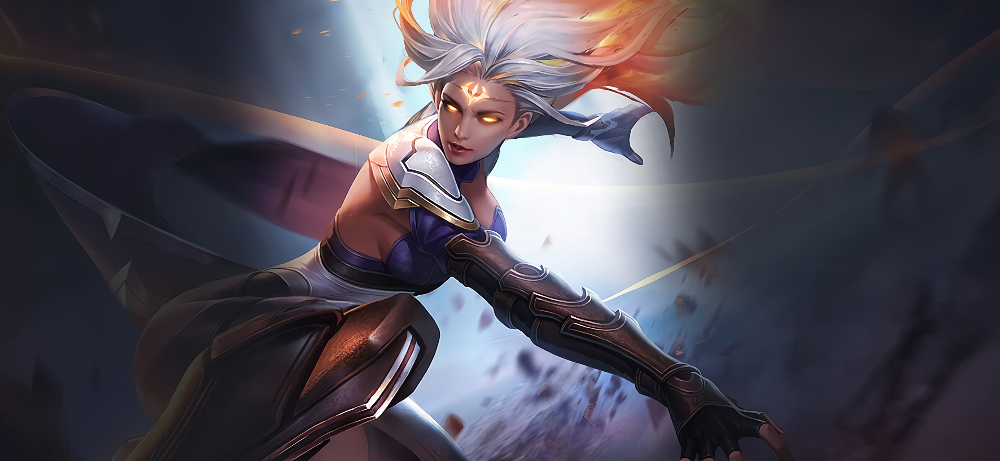
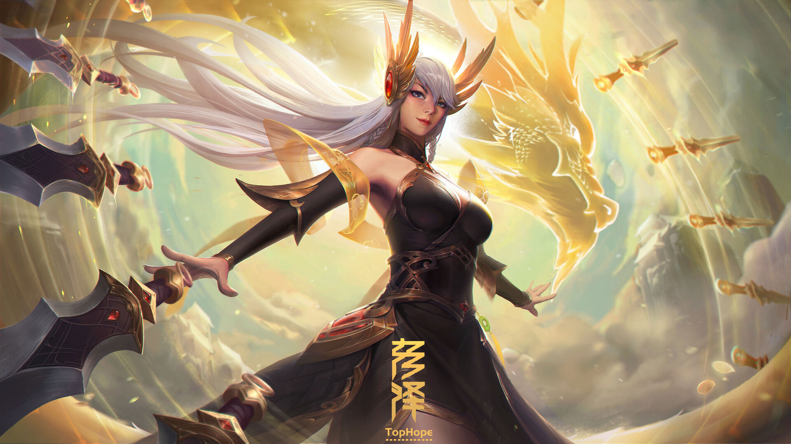

Force

Résistance
Dextérité
Magie
Ingénierie


Environnement : Balcon de la Destinée - Yple
Durée de vie moyenne : 500 ans
Taille : M
Système politique : Sous la dirigeance des archanges
Statut politique : -
Relations hostiles : Ga’ar et ses créations
Alliés : Anges - Archanges
Croyance : Ysiiri
Force
Résistance
Dextérité
Magie
Ingénierie
Capacités innées : Facultés physiques hors du commun
Facilités magiques : Magie blanche / lumineuse
Impossibilités : Magie noire / sombre
Les hérauts sont l’apothéose des artificiels. Ils sont façonnés à même l’argile par des maîtres géants au cœur du berceau de l’existence, afin de servir Ysiiri et étendre la pensée religieuse qui lui est liée.
Profil type : Asservi - Loyal - Serein - Beau parleur
Alimentation : Omnivore - Denrées apparaissant naturellement chaque jour et vignes cultivées
Monture : Aucune
Ainsi, les hérauts n’ont pas d’ailes, contrairement aux anges ou aux archanges, et déambulent librement sur les terres immanentes. Or, ils ne sont que peu reconnus au sein de la ville d’Yple, ayant une place inférieure, du point de vue politique, dans la vie de la cité, bien qu’ils soient indispensables, notamment au travers des travaux manuels ou à l’organisation des fêtes.
De plus, ils forment les Einherjar au combat et à la mission qui leur incombe, étant les mentors des futurs soldats qui affronteront Ga'ar et ses horreurs néantiques.
Ils sont en quelque sorte les porteurs de lumière de l’Yndrill, ceux qui viennent aux Hommes pour les convertir, et qui indirectement, permettent au monde de fonctionner correctement via l’organisation du Balcon de la Destinée.
Nombre d'OC de cette race sur Yndrill: -